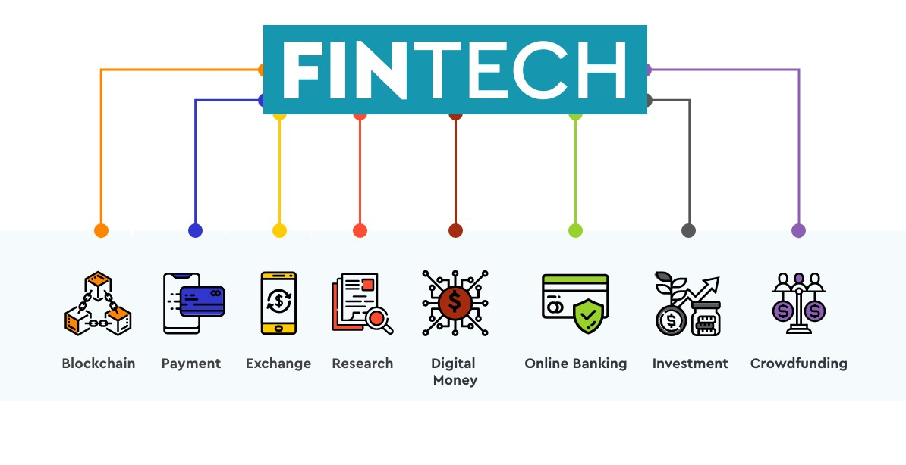

WHAT IS
FINTECH ?
Financial technology (Fintech) is used to describe new tech that seeks to improve and automate the
delivery and use of financial services. At its core, fintech is utilized to help companies, business owners
and consumers better manage their financial operations, processes, and lives by utilizing specialized software
and algorithms that are used on computers and, increasingly, smartphones. Fintech, the word, is a combination of
"financial technology".

BLOCKCHAIN
Blockchain is a system of recording information in a way that makes it difficult or impossible to change, hack,
or cheat the system.
A blockchain is essentially a digital ledger of transactions that is duplicated and distributed across the
entire network of computer systems on the blockchain. Each block in the chain contains a number of transactions,
and every time a new transaction occurs on the blockchain, a record of that transaction is added to every
participant’s ledger. The decentralised database managed by multiple participants is known as Distributed Ledger
Technology (DLT).
ONLINE BANKING
Online banking allows a user to conduct financial transactions via the Internet. Online banking is also known as
Internet banking or web banking.
Online banking offers customers almost every service traditionally available through a local branch including
deposits, transfers, and online bill payments. Virtually every banking institution has some form of online
banking, available both on desktop versions and through mobile apps.
CROWD FUNDING
Crowdfunding is the use of small amounts of capital from a large number of individuals to finance a new business
venture. Crowdfunding makes use of the easy accessibility of vast networks of people through social media and
crowdfunding websites to bring investors and entrepreneurs together, with the potential to increase
entrepreneurship by expanding the pool of investors beyond the traditional circle of owners, relatives, and
venture capitalists.